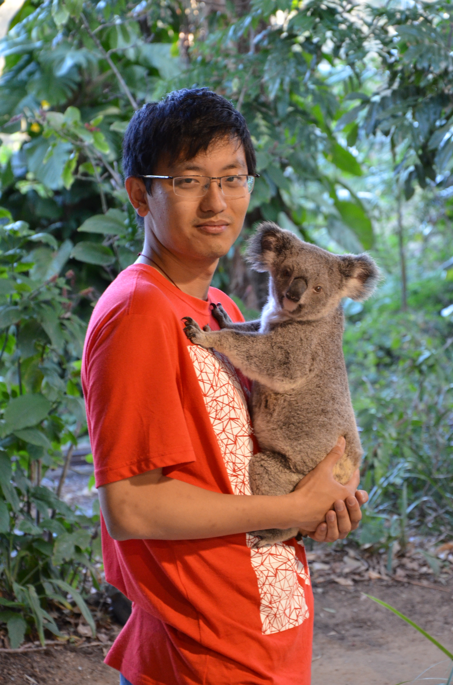

News
Jan 2023
I serve as an associate editor of Information Processing & Management.
Nov 2022
Two papers about reducing hallucination in dialogue system and debiased natural language understanding were accepted by AAAI'23.
October 2022
One paper about user behavior leakage in recommender systems was accepted at TOIS.
One paper about conversational recommendation was accepted by WSDM'23.
May 2022
One paper about attacks against recommender systems was accepted by KDD'22.
April 2022
One resource paper about medical conversation was accepted by SIGIR'22 resource track.
March 2022
Three full papers about reinforcement learning for recommendation, opinion tag and conversational recommendation were accepted by SIGIR'22.
February 2022
One paper about open-ended text generation was accepted by ACL'22.
September 2021
One paper about legal judgment prediction was accepted by Information Processing & Management.
|  |
Zhaochun Ren（）
Professor
Email: zhaochun.ren@sdu.edu.cn
|
I am currently a full professor at Shandong University, China. I’m leading a growing and productive information retrieval and natural language processing group. Prior to this, I worked as a senior research manager at JD.com and a research associate in University College London. I got my PhD from University of Amsterdam, supervised by Prof. Dr. Maarten de Rijke. I am interested in information retrieval, social media mining, and natural language processing. Before joining UvA, I received my B.E and M.E from Shandong University in 2009 and 2012 respectively, and worked as a short-term visiting scholar in Max-Planck-Institut für Informatik, 2012.
Research Interests
| Information Retrieval: Recommender systems Conversational information seeking Legal IR systems and applications |
| Natural Language Processing: Dialogue systems Summarization and tagging Knowledge representation and distillation |
Working Experience
| Shandong University, China Professor 2019 - now |
| Data Science Lab at JD.com, China Research Scientist & Senior Research Manager, 2017 - 2019 Worked on e-commerce recommender systems, text mining, and dialogue systems. |
| Department of Computer Science, University College London, United Kingdom Research Associate 2016 - 2017 Worked on an EPSRC project about early warning for infectious diseases. |
| Informatics Institute, University of Amsterdam, The Netherlands PhD student 2012-2016 Worked on social media analysis. |
| Natural Language Processing Group, Columbia University, U.S.A Visiting Scholar 2014 Director: Prof. Kathleen McKeown |
| D5, Max Planck Institute for Informatics, Germany Visiting Scholar 2012 Director: Prof. Gerhard Weikum |
Education
| University of Amsterdam PhD in ILPS 2012 - 2016, Amsterdam, the Netherlands Supervisor: Prof. Dr. Maarten de Rijke |
| Shandong University M.E. in Computer Science and Technology 2009 - 2012, Qingdao, China Supervisor: Prof. Jun Ma |
| Shandong University B.E. in Computer Science and Technology 2005 - 2009, Qingdao, China |
Selected Publications
(Full list see my [Google Scholar])* Corresponding author
 |
Contrastive Learning Reduces Hallucination in Conversations.
Weiwei Sun, Zhengliang Shi, Shen Gao, Pengjie Ren, Maarten de Rijke, Zhaochun Ren* . AAAI 2023 (CORE rank A*) |
|
Variational Reasoning about User Preferences for Conversational Recommendation.
Zhaochun Ren* (co-first author), Zhi Tian, Dongdong Li, Pengjie Ren, Xin Xin, Huasheng Liang, Maarten de Rijke, Zhumin Chen. SIGIR 2022 (CORE rank A*) |
|
Debiasing Learning for Membership Inference Attacks Against Recommender Systems.
Zihan Wang, Na Huang, Fei Sun, Pengjie Ren, Zhumin Chen, Hengliang Luo, Maarten de Rijke, Zhaochun Ren*. KDD 2022 (CORE rank A*) |
|
Knowledge bridging for empathetic dialogue generation.
Qintong Li, Piji Li*, Zhaochun Ren*, Pengjie Ren, Zhumin Chen. AAAI 2022 (CORE rank A*) |
|
Membership Inference Attacks Against Recommender Systems.
Zhaochun Ren* (co-first author), Minxing Zhang, Zihan Wang, Pengjie Ren, Zhumin Chen, Pengfei Hu, and Yang Zhang. CCS 2021 (CORE rank A*) |
|
Semi-Supervised Variational Reasoning for Medical Dialogue Generation.
Zhaochun Ren* (co-first author), Dongdong Li, Pengjie Ren, Zhumin Chen, Miao Fan, Jun Ma, Maarten de Rijke. SIGIR 2021 (CORE rank A*) |
|
EmpDG: Multi-resolution Interactive Empathetic Dialogue Generation.
Qintong Li, Hongshen Chen, Zhaochun Ren*, Zhumin Chen, Zhaopeng Tu, Jun Ma. COLING 2020 (CORE rank A) |
|
Keywords Generation Improves E-Commerce Session-based Recommendation.
Yuanxing Liu, Zhaochun Ren*, Wanxiang Che, Ting Liu and Dawei Yin. In The Web Conference 2020 |
|
Streaming graph neural networks.
Yao Ma, Ziyi Guo, Zhaocun Ren, Jiliang Tang, Dawei Yin. SIGIR 2020 (CORE rank A*) |
|
Robust Embedding with Multi-Level Structures for Link Prediction.
Zihan Wang, Zhaochun Ren, Chunyu He, Peng Zhang, Yue Hu. IJCAI 2019 (CORE rank A*) |
|
Taxonomy-aware Multi-hop Reasoning Networks for Sequential Recommendation.
Jin Huang, Zhaochun Ren, Wayne Xin Zhao, Gaole He, Ji-Rong Wen and Daxiang Dong. WSDM 2019 (CORE rank A*) |
|
Explicit State Tracking with Semi-Supervision for Neural Dialogue Generation.
Xisen Jin, Wenqiang Lei, Zhaochun Ren, Hongshen Chen, Shangsong Liang, Yihong Eric Zhao, Dawei Yin. CIKM 2018 (CORE rank A) |
|
Sequicity: Simplifying Task-oriented Dialogue Systems with Single Sequence-to-Sequence Architectures.
Wenqiang Lei, Xisen Jin, Zhaochun Ren, Xiangnan He, Min-Yen Kan, Dawei Yin. ACL 2018 (CORE rank A*) |
|
Knowledge Diffusion for Neural Dialogue Generation.
Shuman Liu, Hongshen Chen, Zhaochun Ren, Yang Feng, Dawei Yin. ACL 2018 (CORE rank A*) |
|
Hierarchical Variational Memory Network for Dialogue Generation.
Zhaochun Ren* (co-first author), Hongshen Chen, Jiliang Tang, Yihong Eric Zhao, Dawei Yin. WWW 2018 (CORE rank A*) |
|
Multi-dimensional network embedding with hierarchical structures.
Zhaochun Ren* (co-first author), Yao Ma, Ziheng Jiang, Jiliang Tang, Dawei Yin. WSDM 2018 (CORE rank A*) |
|
A Path-constrained Framework for Discriminating Substitutable and Complementary Products in E-commerce.
Zihan Wang, Ziheng Jiang, Zhaochun Ren, Jiliang Tang, Dawei Yin. WSDM 2018 (CORE rank A*) (Best Student Paper Award) |
|
Neural Attentive Session-based Recommendation.
Jing Li, Pengjie Ren, Zhumin Chen, Zhaochun Ren, Jun Ma. CIKM 2017 (CORE rank A) (Best Full Paper Runner Up Award) |
|
Summarizing Answers in Non-Factoid Community Question-Answering
Zhaochun Ren*(co-first author), Hongya Song, Shangsong Liang, Piji Li, Jun Ma, Maarten de Rijke. WSDM 2017 (CORE rank A*) |
|
Social Collaborative Viewpoint Regression with Explainable Recommendations.
Zhaochun Ren, Shangsong Liang, Piji Li, Shuaiqiang Wang, Maarten de Rijke. WSDM 2017 (CORE rank A*) |
|
Time-aware Multi-Viewpoint Summarization of Multilingual Social Text Streams.
Zhaochun Ren, Oana Inel, Lora Aroyo, Maarten de Rijke. CIKM 2016 (CORE rank A) |
|
Explainable User Clustering in Short Text Streams.
Zhaochun Ren*(co-first author), Yukun Zhao, Shangsong Liang, Jun Ma, Emine Yilmaz, Maarten de Rijke. SIGIR 2016 (CORE rank A*) |
|
Summarizing Contrastive Themes via Hierarchical Non-Parametric Processes.
Zhaochun Ren, Maarten de Rijke. SIGIR 2015 (CORE rank A*) |
|
Hierarchical Multi-Label Classification of Social Text Streams.
Zhaochun Ren, Maria-Hendrike Peetz, Shangsong Liang, Willemijn van Dolen, Maarten de Rijke. SIGIR 2014 (CORE rank A*) |
|
Personalized Time-aware Tweets Summarization.
Zhaochun Ren, Shangsong Liang, Edgar Meij, Maarten de Rijke. SIGIR 2013 (CORE rank A*) |
|
Summarizing web forum threads based on a latent topic propagation process.
Zhaochun Ren, Jun Ma, Shuaiqiang Wang, Yang Liu. CIKM 2011 (CORE rank A) |
Scholarships and Awards
|
Rising Star Award on Natural Language Processing, China Computer Federation, 2022 Tencent “Rhino Bird” Faculty Research Award, 2020 WSDM 2019 Outstanding Reviewer Award, 2019 Qilu Youth Fellowship, Shandong University, 2019-2023 WSDM 2018 Best Student Paper Award, 2018 CIKM 2017 Best Full Paper Runner Up Award, 2017 Chinese Government Award for Outstanding PhD Students, 2015 |
Invited tutorials
|
Zhaochun Ren.Conversational Information Seeking and Recommendation. In NLPCC 2022, Guilin, China, 2022. Zhaochun Ren. Recent Studies in Conversational Recommendation. In YSSNLP 2022, Online, 2022. Zhaochun Ren. Unstructured Knowledge-grounded Dialogue Systems. In Alibaba APSARA 2021, Hangzhou, China, 2021. Zhaochun Ren. Recent Studies in Information Retrieval. In CCL 2019, Kunming, China, 2019. Zhaochun Ren. Challenges and Future Directions of End2End Task-oriented Dialogue Generation. In CCF ADL 100, Beijing, China, 2019. Zhaochun Ren, Xiangnan He, Dawei Yin, Maarten de Rijke. Information Discovery in E-commerce. In SIGIR'18, Ann Arbor, USA, 2018. Zhaochun Ren. Search and Content Analysis in E-commerce. In CCIR'18, Guilin, China, 2018. |
Selected Professional Activities
|
Editorial Associate Editor, Information Processing & Management (IPM), since 2023 Editor, ACM Transactions on Information Systems (TOIS), 2020-2021 Guest Editor of ACM Transactions on Information Systems, 2020-2021 Editorial board member of Information Processing & Management (IPM), 2017-2023 Editorial board member of Frontiers in Big Data, since 2021 |
|
Organisational Sponsorship chair of WWW 2024 Tutorial chair of NLPCC 2023 Web chair of EMNLP 2022 Sponsorship chair of SIGIR 2021 Sponsorship chair of NLPCC 2021 General chair of YSSNLP 2021 Publicity chair of WSDM 2018 Proceedings chair of ECIR 2014 Workshop co-organizer – DAPA 2019 workshop (with WSDM 2019), NLP4REC 2020 workshop (with WSDM 2020), and AIIS 2020 workshop (with SIGIR 2020). Senior program committee member – SIGIR 2023, KDD 2022, WSDM 2022-2023, ECML-PKDD 2020-2022, WWW 2021-2023, IJCAI 2021-2022 |
Selected Patents
|
基于规则间关联的知识图谱数据扩展方法及系统, CN114741460B 一种基于满意度的用户模拟方法及系统, CN114048301B 一种基于时间知识抽取的文本摘要自动生成方法及系统, CN106055542B 信息推送方法和装置, CN107506495B 融合评论的可解释性服装推荐方法、系统、设备及介质, CN109754317B 一种会话推荐方法、系统、设备及介质, CN110008408B 基于共享账户的信息跨域并行序列推荐方法、介质及设备, CN110032684B 一种基于自由文本知识的对话方法及系统, CN110297895B 一种基于知识的深度医疗问题路由方法及系统, CN110322959B 一种对话生成方法、系统、可读存储介质及计算机设备, CN110321417B 基于生成式的辅助模板增强服装搭配方案生成方法及系统, CN110825963B 基于用户兴趣编辑的商品序列推荐方法及系统, CN112862007B 一种基于混合驱动的对话式信息获取方法, CN113076078B Method and system for processing sentence,and electronic device, US20220215177A1 |
Supervision
| PhD & M.Sc Supervision in Shandong University: Ziqi Zhao (M.Sc student, from 2023) Liu Yang (M.Sc student, from 2023) Zhengliang Shi (M.Sc student, from 2023) Shiguang Wu (M.Sc student, from 2023) Zhe Zhang (M.Sc student, from 2022) Jitai Hao (M.Sc student, from 2022) Zengrun Ma (M.Sc student, from 2022) Kexin Huang (M.Sc student, from 2022) Xiaoying Jin (M.Sc student, from 2021) Xiaoyu Zhang (M.Sc student, from 2021) Weiwei Sun (M.Sc student, from 2021) Zhi Tian (M.Sc student, from 2020) Mengxue Zhao (M.Sc student, from 2020) Na Huang (M.Sc student, from 2020) Yiqing Liu (M.Sc student, from 2020) Xiangyuan Liu (M.Sc student, from 2020) Yanchao Wang (M.Sc student, from 2020) Shuyu Guo (PhD student, from 2022) Yougang Lv (PhD student, from 2021) Yukun Zhao (PhD student, co-advisored with Dr. Dawei Yin, from 2020) Zihan Wang (PhD student, from 2020) Qiannan Cheng (Co-advisor, M.Sc student 2018-2020, she joins Alibaba.) Yue Feng (Mentorship at Baidu 2019-2020, she studies as a PhD student at University College London.) Dongdong Li (Co-advisor, M.Sc student 2019-2022, he joins Baidu.) Qintong Li (Co-advisor, M.Sc student 2018-2020, she studies as a PhD student at The University of Hong Kong.) Minghong Xu (Co-advisor, M.Sc student 2018-2020, she joins Baidu.) Changfeng Sun (Co-advisor, M.Sc student 2017-2020, he studies as a PhD student in Xi'an Jiaotong University.) |
| Undergraduate Supervision in Shandong University: Shicheng Bei (2016, M.Sc student at UC Santa Diego, USA) Qitao Shen (2016, M.Sc student at Rice Univeristy, USA) Minxing Zhang (2016, PhD student at Saarland University, Germany) Xi Li (2017, PhD student at Renmin University.) Lifan Zhao (2017, PhD student at Shanghai Jiaotong University.) Yougang Lv (2017， PhD student at Shandong University.) Feifan Song (2017, PhD student at Peking University.) Zhiwei Zhang (2017, PhD student at Shanghai Jiaotong University.) Weiwei Sun (2017, M.Sc student at Shandong University.) Mingruo Yuan (2017, PhD student at The University of Hong Kong.) Yulong Huang (2018, M.Sc student at University of Science and Technology of China.) Qingyang Liu (2018, M.Sc student at Renmin University.) Minghui Tian (2018, M.Sc student at Shandong University.) Shiguang Wu (2019, M.Sc student at Shandong University.) Zhengliang Shi (2019, M.Sc student at Shandong University.) Liu Yang (2019, M.Sc student at Shandong University.) Zijian Meng (2019) |
| Supervision before joining Shandong University: Shen Gao(PKU, CHINA), Zhaonian Cai(JHU, CHINA), Bo Cheng(JHU, CHINA), Yuanxing Liu (HIT, CHINA), Yao Ma(MSU, USA), Shuman Liu (CAS, CHINA), Xisen Jin (USC, USA), Zihan Wang (CAS, CHINA), Jing Li (Shandong Public Security Department, CHINA), Pengjie Ren (UvA, The Netherlands), Hongshen Chen (JD.com, CHINA), Zhengyi Yang (NSWU, Australia), Yukun Zhao (Alibaba, China)， Hongya Song （Huawei, CHINA）, Jin Huang (UvA, The Netherlands), John Aivalis (UvA, The Netherlands) |
Projects
|
NSFC 62272274, Conversational Recommendation Research within Complicated Knowledge, 2023-2026, Sole PI Meituan Research Fund, Knowledge-enhanced Recommender Systems, 2021-2022, Sole PI National Key R&D Program, Automatic AI-based News Generation, 2020-2023, PI Hisense Faculty Research Grant, Interactive Intelligent Assistants in Smart Home, 2020, Sole PI International Cooperation Grant for Natural Language Processing Research, Shandong University, 2020-2024, Sole PI NSFC 61902219, Recommendation-Oriented Dialogue Generation in Multiple Digital Scenarios, 2019-2022, Sole PI Qilu Youth Scholar Research Grant, Shandong University, 2019-2023, Sole PI Tencent Rhino-Bird Fund, Knowledge-base Oriented Response Generation, 2019, Sole PI iFLYTEK Research Fund, COGOSC-20190003, Recommendation-Oriented Dialogue Generation, 2019, Sole PI Multidisciplinary Research and Innovation Grant, Shandong University, 2019-2023, Co-PI Key Scientific and Technological Innovation Program of Shandong Province, 2019-2022, Co-PI NSFC 62202271, Multi-Reward Recommendation via Offline Reinforcement Learning, 2023-2025 Hisense Faculty Research Grant, Natural Language Generation for Smart Home, 2023 Tencent Rhino-Bird Fund, Self-supervised Learning for Pre-trained Search Ranking, 2021 NSFC 61972234, Data Fusion-based Explainable Medical Question-Answering, 2019-2023 NSFC 61272240, Social Network Modeling for Social-aware Multimedia Summarization, 2017-2021 |